AbstractThis paper introduces the cutting-edge 3D Concrete Printing (3DCP) process which stands at the core of the project Concrete Choreography, a family of nine prefabricated concrete columns. By simultaneously overseeing technological development, computational design and robotic fabrication, an interdisciplinary research team was able to reframe the challenge of large-scale high-resolution 3DCP.Metrics
Development of Extrudable High-Strength Fiber-Reinforced Concrete Incorporating Nano-Calcium-Carbonate (2020-09)
Shaohua Chu,
Leo Li,
Albert Kwan Journal Article – Additive Manufacturing, Vol. 37
AbstractThe use of extrudable (3D printable) concrete in construction has attracted increasing attention, whilst the major obstacles to its wider application lie in the difficulties in materials design, particularly when fibers are added as an alternative to reinforcement. In this study, high strength fiber reinforced concrete (HSFRC) mixtures for extrusion were developed, and the influences of nanoparticles and carbon, steel and glass fibers on their extrudability, buildability and strength properties were investigated. It was found that the addition of nanoparticles and fibers would enhance the rheological properties for shape retention. It was also found that the addition of steel fibers would be more effective in improving the strength but less effective in improving the interlayer bond compared to the addition of carbon or glass fibers, whereas a suitable amount of nanoparticles would generally favor the strength and interlayer bond. Lastly, a conceptual model for the design of extrudable concrete mixtures and some explanations from the perspective of thixotropy were presented. This study shall advance the development of extrudable HSFRCMetrics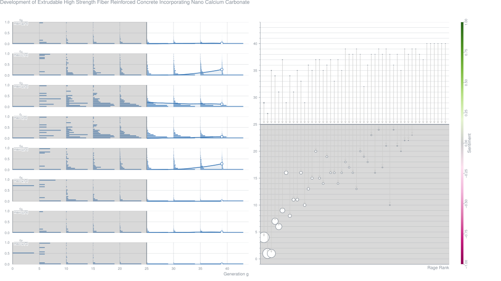
Layer-Interface Properties in 3D Printed Concrete: Dual Hierarchical Structure and Micromechanical Characterization (2020-09)
AbstractExtrusion-based 3D printing is the manufacturing technology which shapes the material layer by layer. This deposition mode results in a weak interface between layers, which seriously deteriorates the mechanical performance of printed objects. It is well-known that bonding strength of layer interface is fundamentally controlled by the deposition process (time interval, interfacial humidity, etc.) and properties of printing material. In this paper, XCT/SEM image processing was introduced to analyze interfacial pore structure at different scales, while nano-indentation was utilized for characterizing the interface micromechanical performance. The results indicated that layer interface generates a dual hierarchical structure, where deformation ability of rough layer surface contributes to the macro-interface and hydrates structure dominates the micro-interface. The influences of such factors including material rheological properties, deposition time interval and interfacial humidity can be integrated in this dual hierarchical structure. Finally, an empirical model was proposed to combine dual hierarchical structure with bonding strength of layer interface in 3D printed concrete.Metrics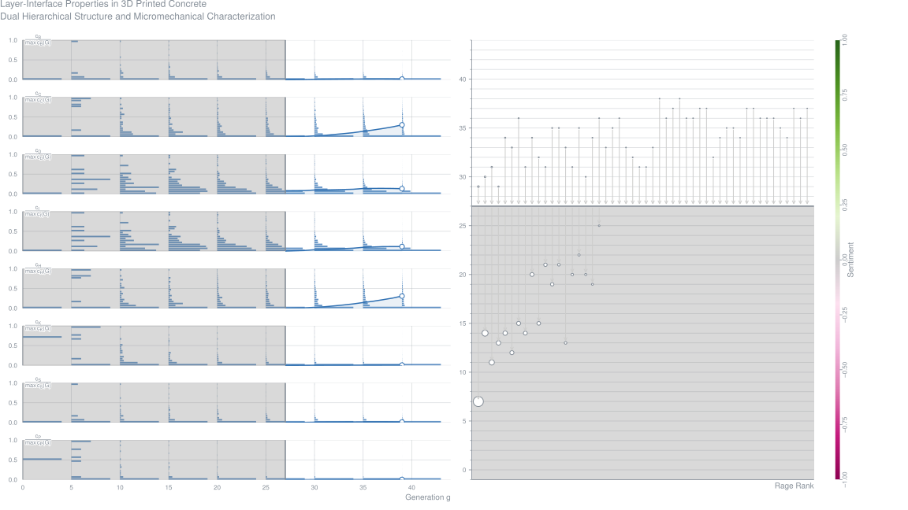
DFAB House: A Comprehensive Demonstrator of Digital Fabrication in Architecture (2020-09)
AbstractThis paper describes the making of DFAB HOUSE, a multi-technology demonstrator of digital fabrication in architecture, engineering and construction (AEC). While most individual digital fabrication technologies used to build DFAB HOUSE have been presented independently at conferences and in journal articles, this paper describes how, in concert, they amount to an architectural achievement that is more than the sum of its parts. To do this, the paper does three things: it describes the process of conceiving and delivering the overall project; secondly, it highlights challenges in implementation; and finally it discusses the significance of DFAB HOUSE in the context of a rapidly transforming architectural research and practice.Metrics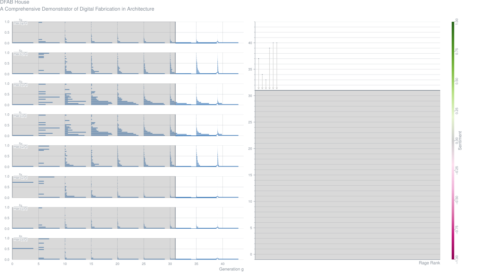
Influence of Supplementary Cementitious Materials on Rheological Properties of 3D Printed Fly-Ash-Based Geopolymer (2020-09)
Abstract3D printed fly ash based geopolymer was prepared with fly ash and quartz sand as main raw materials while slag powder and silica fume as supplementary cementitious materials. In this paper, anhydrous sodium silicate powder was used as activator and ATTAGEL-50 thixotropic thickener was used as 3D printing additive. The effect of slag powder and silica fume on the rheological properties of 3D printed fly ash based geopolymer was studied. The results show that the apparent viscosity, thixotropic property, plastic viscosity and yield stress of geopolymer first increased and then decreased with the increase of slag powder and silica fume respectively. Compared with the Bingham (BH) model, the Herschel- Bulkley (H–B) model is more accurate and more suitable for characterizing the rheological model of fly ash based 3D printed geopolymer. The suitable content for slag powder is 10%. On the basis of adding slag powder, silica fume was also used to replace the fly ash, the suitable content for silica fume is 10% in this fly ash-slag powder based 3D printing geopolymer. According to the SEM observations, it is found that the interior of the printing layer of the 3D printing block is more conducive to the production of the geopolymer gel than the interlaminar surface of the printing layers. It is found that the printing layers are connected with each other through bridges.Metrics
Additive Fabrication of Concrete Elements by Robots: Lightweight Concrete Ceiling (2020-09)
Georg Hansemann,
Robert Schmid,
Christoph Holzinger,
Joshua Tapley,
Hoang Kim,
Valentino Sliskovic,
Bernhard Freytag,
Andreas Trummer,
Stefan Peters Contribution – Fabricate 2020
AbstractFor the last 150 years, engineers and designers have been choosing reinforced concrete as the material to use for load bearing structures. Over the decades it has proven itself as a robust composite material. It is versatile and has insulating and fire proofing properties. Reinforced concrete has become indispensable as a building material, both for the elements which come in contact with the ground and for the structural elements which transfer horizontal or vertical loads. Concrete is not only used in multi-storey buildings but also applied in infrastructure. Over the course of time, two production processes have established themselves, in-situ concrete construction and prefabricated construction. The latter can be further divided into fully precast elements and elements that are completed once they have been filled with in-situ concrete. Over the years, the cost of producing concrete elements has shifted between material and labour costs and this has effected the appearance of concrete constructions. Originally, the cost of the materials was high and the labour costs low and this led to lean, filigree designs. Nowadays, however, to save on the expensive labour costs and make use of the cheap material costs, bulky, thick walled components are very common. This development is also accompanied by the demands of recent building standards which include, for example, the necessary concrete cover for durable components. Fundamentally and above all else, there is an enormous demand for building materials due to current urbanisation trends and this, in turn, pushes us to rethink material efficiency. This is especially necessary as there are a large number of multi-storey buildings being built where the efficiency of the structure is ignored. They are responsible for a large amount of the building materials being used. In the light of the fact that the production of cement for reinforced concrete accounts for about 5% of global man-made CO2 annually (Worrell et al., 2001), t he question may be asked whether the way in which our reinforced concrete structures are built is in need of urgent review and revision. Although the composite material has seen many changes and improvements over the years in the area of concrete’s properties, rebar manipulation and formwork production, one thing has barely changed and that is the pouring of the concrete. This article presents the research project COEBRO which dealt with using concrete printing to produce an alternative to a poured flat slab ceiling (Fig. 1).Metrics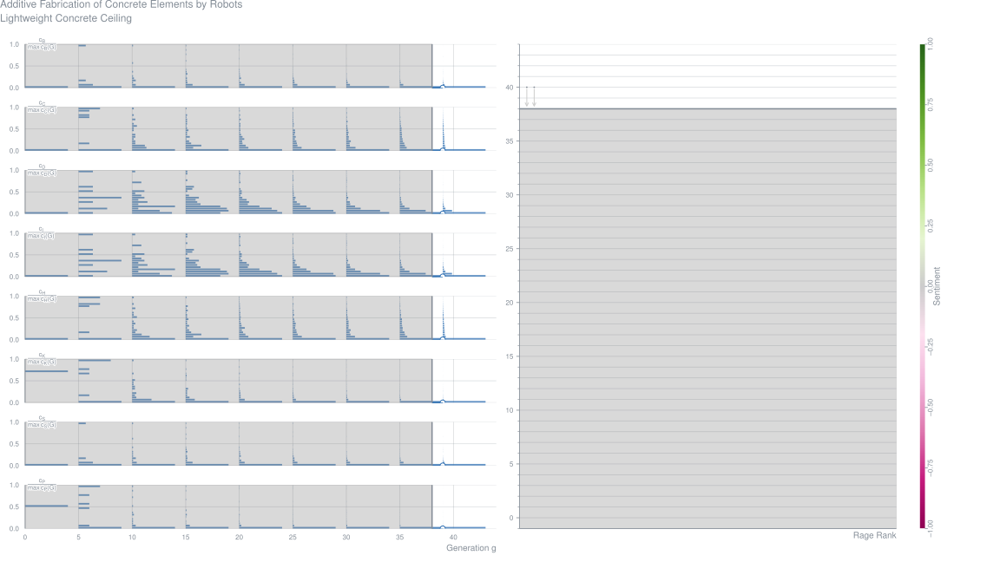
Examining the Significance of Infill-Printing-Pattern on the Anisotropy of 3D Printed Concrete (2020-09)
Daniel Heras Murica,
Moneeb Genedy,
Mahmoud Taha Journal Article – Construction and Building Materials, Vol. 262
AbstractAdditive manufacturing relies on the deposition of layers of material upon existing ones. The nature of this method disadvantages materials such as concrete due to the rheological changes of the material over time, the lack of standardization of the printing process, and the nature of the deposition process. This paper examines the significance of infill printing patterns on the anisotropic properties of3D printed concrete. The rheological properties, the compressive strength, and the interlayer and interfilamentous bond strength of the 3D printed concrete were characterized. We show that there is a directional dependency on all the infill patterns. The specimens show lower compressive strength, and modulus of elasticity in the Z (extrusion) direction compared with the X and Y directions but insignificant difference of the strength and modulus between the X and Y directions. However, no directional dependency was found for the strain at failure. On the other hand, no significant difference in the mechanical properties of 3D printed concrete was observed or can be attributed to the infill printing patterns. The results also show that the 3D printed concrete shows higher compressive strength, for two out of the three testing directions (X and Y) than conventionally cast concrete. This is due to the compactness associated with the printing process that is strongly dependent on the printing parameters.Metrics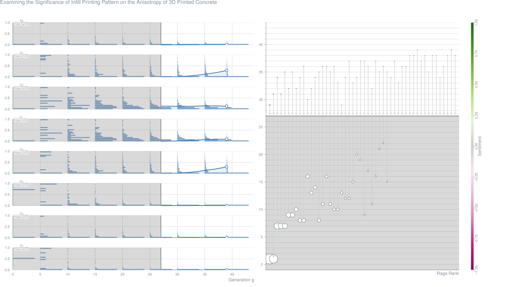
Reinforcement-Strategies for 3D Concrete Printing (2020-09)
AbstractThe ingenious bridge, roof, and shell structures of the last century were designed from the understanding of the congenial interaction of the two materials concrete and steel. Nowadays, reinforced concrete is the most widely used material in con- struction. The use of system formwork and easy-to-install reinforcement support structures that are optimized in terms of labor costs, but often have inefficient use of material. In this context, Stefan Polónyi has repeatedly criticized the engineers' lost understanding of the interaction of concrete and reinforcement. With Additive Manufacturing, an innovative digital manufacturing technology is now available that allows new freedom in concrete design with a resource-efficient use of materials at the same time. With regard to practical application, the integration of reinforcement represents a central challenge in 3D-concrete-printing. The authors see here the future chance of a force-flow controlled reinforcement layout. The paper shows new strategies for the combined Additive Manufacturing of concrete and reinforcement and presents first 3D-printed reinforced concrete elements.Metrics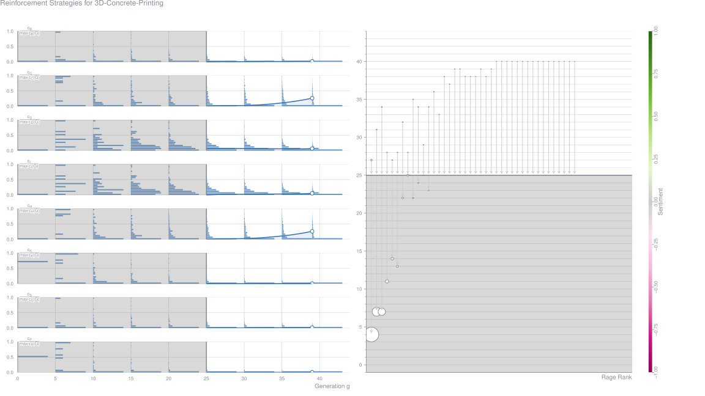
Assessing the Environmental Viability of 3D Concrete Printing Technology (2020-09)
AbstractThe ongoing development of digital design and fabrication techniques has explicitly changed the way architecture is thought, designed and produced. 3D Concrete Printing Technology personifies best the long-lasting pursuit of non-standard production in architecture. A recently established tendency of systematic recourse to optimization algorithms for formal design fashioned a general belief into the sustainable character of those forms as well as the potential of digital technologies in field of environmental performance of construction sector. This paper presents a case study of environmental evaluation of a generic building system redesigned for mortar 3D Printing technology. The life cycle assessment of construction phase of a system has been performed and the sensitivity study has been effectuated. The results show that the contribution of robotic 3D printing system to the overall result is fairly significant and, in some figures, can even exceed the one of the materials.Metrics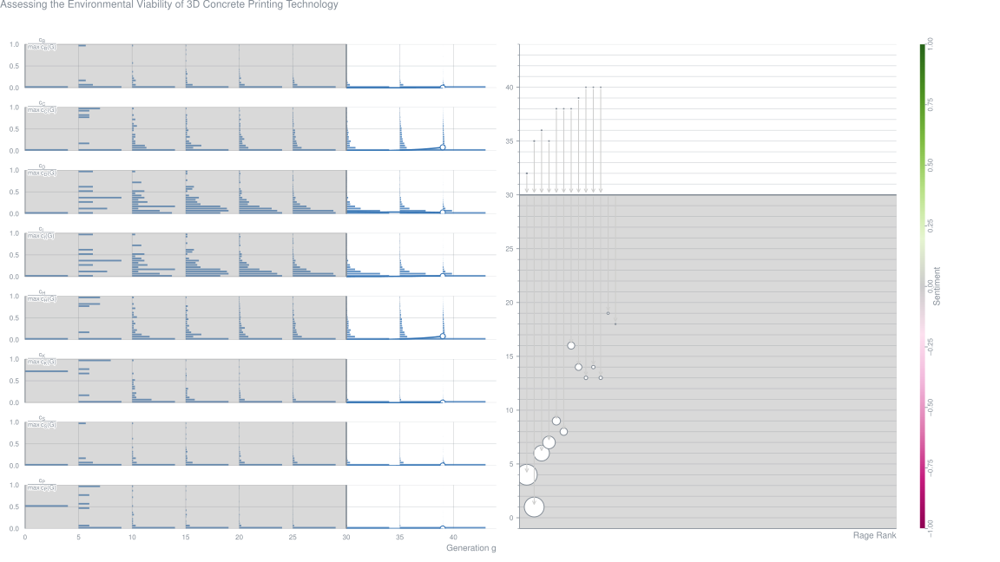
Variable-Geometry Nozzle for Surface Quality Enhancement in 3D Concrete Printing (2020-09)
AbstractThe 3D Concrete Printing technology (3DCP) has developed fast in the past few years. roo Compared to conventional construction method, the 3DCP technology offers an pro advantage in speed and cost. However, the surface of a structure from 3DCP technology pro requires post-finishing processes as the direct outcome suffers from low quality surface p finish problem, such as jagged surface and staircase effect. This study aims to improve e-p the surface finish quality in 3DCP using a developed novel variable-geometry nozzle that ep can directly control the extrudate geometry during the printing process at every layer. The Pre nozzle assembly features an adjustable nozzle outlet geometry that can be controlled Pre along the process. The mechanism requires a slicing algorithm to determine the extrudate Pr geometry at every layer based on the designated printed structure. The corresponding l P algorithm was also developed and will be presented in this paper. Subsequently, the al P functionality of the proposed method was validated with a case study of manufacturing a al structure with curved outer-surface geometry (an arch). naMetrics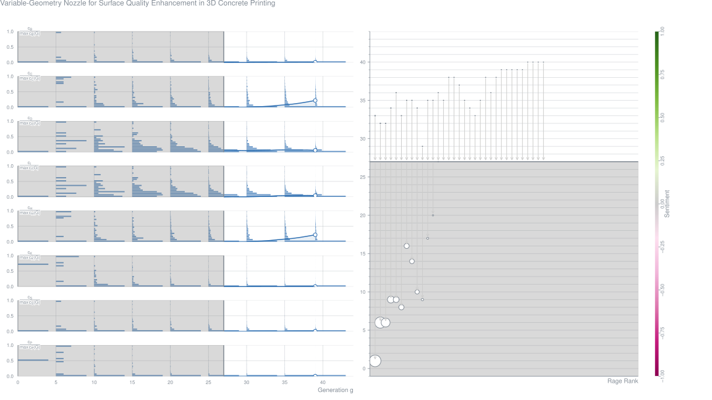
Sustainable Thin-Shell 3D Printed Formwork for Concrete (2020-09)
AbstractWith the growth in popularity of3D printing technologies, machinery is getting cheaper, while the variety of available materials is growing larger. However, 3D printing strategies for realizing architecture are still in their infancy. Direct 3D printing of building components is a very challenging task, as most printing technologies are, until now, not able to address the demanding requirements of architectural components, including scale or structural capacity. The conventional way of creating formwork for non-standard, concrete components is very labour intensive and until today, can be more than 50% of the cost of casting concrete. This research addresses this very topic by proposing a sustainable, 3D printed formwork for casting concrete, combining the advancements of computation and digital fabrication with the traditional way of constructing large concrete components. It aims in the creation of dissolvable, 3D printed formwork that can be simply washed away after the curing process of concrete, using only water and no additional chemical solvent. Introducing such a process, it enables to create bespoke, full-scale structural components, without compromising the complexity of form or surface quality.Metrics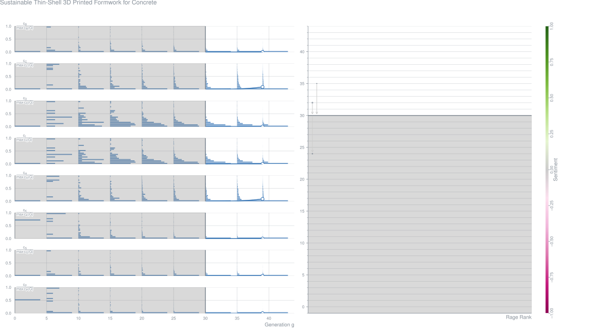
Bond Properties of Reinforcing Bar Penetrations in 3D Concrete Printing (2020-09)
AbstractExtrusion based 3D concrete printing is an emerging construction automation technology. A major challenge is an automated ‘in-process’ reinforcing method while the 3D printing. This study presents an effective in-process reinforcing technique by penetrating deformed reinforcing bars through a predefined number of freshly printed layers. The bond varies along the penetration depth due to differing levels of disturbances experienced by the layers due to the penetrated bar. To characterise the bond at different depths, pull out tests are performed on sections of a 350 mm bar penetrated through a printed wall. The results are then compared to a separate sample on a sand bed with varying lengths of bar penetrated through. The sand bed method was used to isolate the effect of damage due to penetration action. It was found that penetrations over 90 mm caused significant damage. The bond mechanism is investigated and explained with supportive evidences.Metrics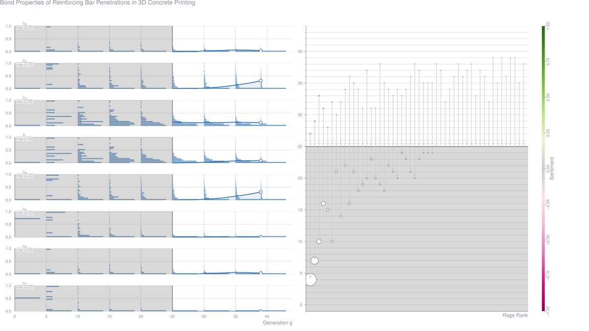
Effect of Microwave-Heating on Inter-Layer Bonding and Buildability of Geopolymer 3D Concrete Printing (2020-09)
AbstractThe emerging concept of 3D concrete printing (3DCP) by the laminate stacking of layers without formwork has major issues of poor interlayer bond adhesion and inadequate buildability of printed layers. This paper explores microwave heating technique as a set-on-demand method to increase the structuration rate of geopolymer concrete for 3DCP applications. The microwave heating was applied just before the placement of layers (i.e. at the nozzle head) and the effect of heating duration on the interlayer bond strength and buildability were assessed. Moreover, the loss of surface and bulk moisture and the bond strength enhancing mechanism were also investigated. The results demonstrated that the optimum microwaving duration of 10 s has increased the interlayer bond strength by 132%. The interlayer temperature and surface moisture loss has shown an increasing trend with the heating duration. Despite the increased surface moisture loss with microwave heating, the observed increment in interlayer bond strength (for up to 10 s of heating) was due to the acceleration in polycondensation reaction between the filaments having adequate stiffness for maximum mechanical interlocking with minimum deformation after stacking. On the other hand, the buildability of printed filaments, as measured from the rate of particle re-flocculation and structuration, has showed a major improvement. Findings from this study propose incorporating ‘‘set-on demand” technique using electromagnetic radiations in construction 3D printing. This initiates a new era of print heads, designed to solve problems faced by current concrete printing industry
Optimal Rate of Printing of 3D Printed Concrete Columns and Walls to Avoid Buckling (2020-09)
AbstractExtrusion based construction of concrete structures has been identified as one of the alternative construction technologies which reduces the construction costs, delays in construction and the material consumption. The most attractive feature of 3D printed constructions is the ease of developing intricate forms and shapes (which otherwise require skilled manpower). Since this is a relatively new technology, not much research has been done with regard to its structural performance and stability. One of the major concerns is the possibility of buckling (under its self-weight) of the column or wall during the extrusion process. This sets a limitation of the acceptable height, thickness and rate of extrusion process. In this study simple ways (second order analysis using matrix methods) have been explored to determine the critical height and the optimal rate of extrusion. Matrix methods have inherent limitations due to the simplification adopted by ignoring the higher-order terms in Taylor’s series. The study uses the evolution of modulus of elasticity of concrete as proposed in literature. The analysis method has been validated using pertinent buckling tests reported in literature. Parameters such as modulus of elasticity and length are considered to determine the critical height to thickness of the wall and the optimal rate of extrusion. The problem is solved using the MATLAB software. This method requires minimal input from the user such as material properties, geometry and printing speed. The analysis method used in this study provides a useful design tool to estimate the limiting parameters of the structural walls and columns manufactured through the process of 3D printing.Metrics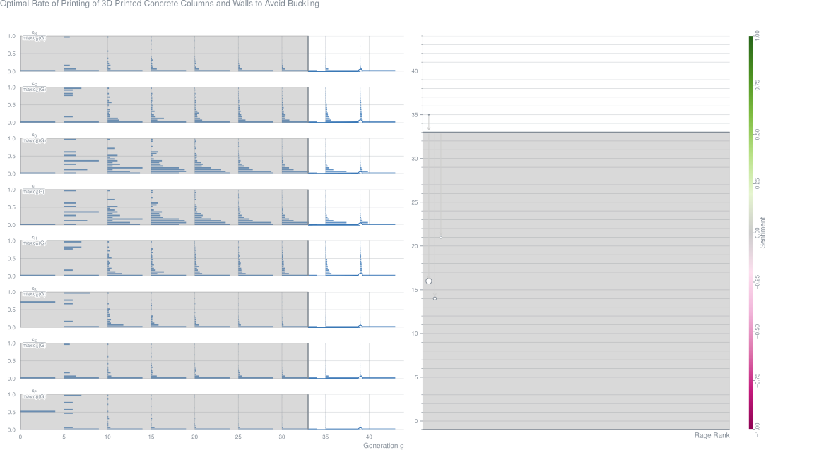
Review on 3D Printed Concrete as Structural Beam Members (2020-09)
AbstractRecently, Three-Dimensional Concrete Printing (3DCP) has gained its popularity as construction material. It offers several advantages over conventionally casted concrete such as absence of formwork, reduction of construction equipment transportation, greater safety, reduction of labour cost, and many others. However, the technology also comes with many challenges. Researches in this area can be classified into two issues which are fresh and hardened states of the printed concrete. Investigation of fresh concrete focuses on the optimal design of rheological properties which determines the pumpability, extrudability, and buildability. While mechanical properties of hardened 3DCP are usually investigated by adopting standard tests for conventionally casted concrete. However, due to the complexity of printing process, it is often that 3DCP behaviours cannot be predicted by its mechanical properties obtained from the tests. This paper reviews some studies done by others to highlight potential manufacturing process related weak points of 3DCP as structural beam members.Metrics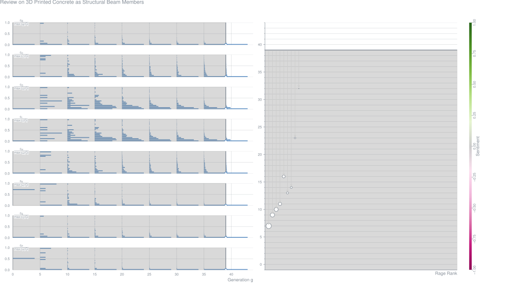
Use of 3D Printing to Create Multi-Functional Cementitious Composites: Review, Challenges and Opportunities (2020-09)
Branko Šavija Journal Article – RILEM Technical Letters, Vol. 5, pp. 17-25
AbstractAdditive manufacturing has been a topic of interest in the construction industry for the past decade. 3D printing of concrete structures promises great improvements in construction efficiency, waste reduction, and shape optimization. Another field where additive manufacturing offers opportunities is on the material level of cementitious composites. Techniques developed in other fields can be used to create multifunctional cementitious composites beyond what is possible with conventional technologies. This letter reviews recent developments in the field. Different applications are discussed: creating reinforcement for cementitious composites, creating capsules and vascular networks, and cementitious composites with superior mechanical behavior. Challenges for further research and practical applications of such materials are also discussed.
Construction Industry with 3D Printer: A New Era (2020-09)
Shivam Sharma,
Soham Mitra,
Adeyemi Adesina,
Sreekanta Das Contribution – Proceedings of 1st Online International Conference on Recent Advances in Computational and Experimental Mechanics
AbstractAs most industries are gradually moving towards automation, the additive manufacturing of concrete using three-dimension (3D) printing forms a visionary step towards achieving this goal for the construction industry. Printing of concrete using a 3D concrete printer (3DCP) is an evolving technology that has the potential to revolutionize the construction industry by reducing the workforce, time, cost, and formwork of construction projects. This emerging field can transform the construction industry by rendering a paradigm shift from the conventional “beam and post” approach. Although 3DCP is in its infancy, several research works have been completed. Also, few structures have already been constructed around the world using the latest available technology in 3DCP. One such example is a two-story office building in Dubai. This paper discusses the history of the evolution of 3DCP technology, the materials used in the process and their rheological properties, and the mechanical properties of the printed structure. This paper also highlights the details of the various structures constructed worldwide using this technology. Lastly, this paper discusses the scope of future research work that can be taken up for enhancing the capabilities of the current 3D concrete printing technology and exploring applications of sustainable building materials in various constructions. The review of the development of 3DCP in the recent past and the various works completed to date using this technology show the potential of 3DCP in bringing a significant transformative improvement in the traditional construction process as well as in developing applications of alternative and green building materials. Thus, this technology has a huge scope going forward.Metrics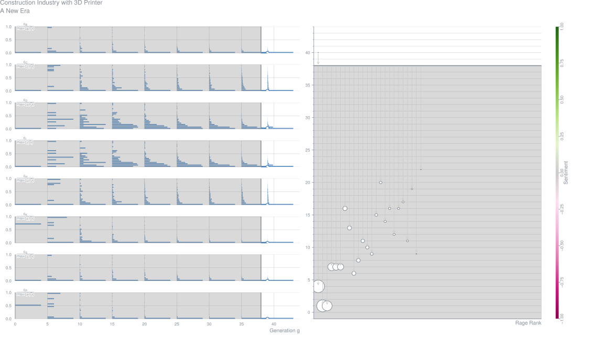
3D Printed Concrete for Large-Scale Buildings: An Overview of Rheology, Printing Parameters, Chemical Admixtures, Reinforcements, and Economic and Environmental Prospects (2020-09)
AbstractThis paper provides a comprehensive survey of current technological challenges and prospects for 3D printing technology with concrete applied to large-scale buildings. This innovative construction approach promises to revolutionize the shape of buildings with considerable time and cost savings but is still facing many technical and operational challenges. We gathered the knowledge of the most relevant and recent publications with our perception to address and discuss the main operational parameters, feasibility, and prospects for 3DPC technology. The paper is organized into five main categories: rheology of concrete for printing, effect of chemical admixtures, the role of reinforcements and inclusions, printing parameters and solutions for large-scale printers, and an analysis of economic and environmental aspectsMetrics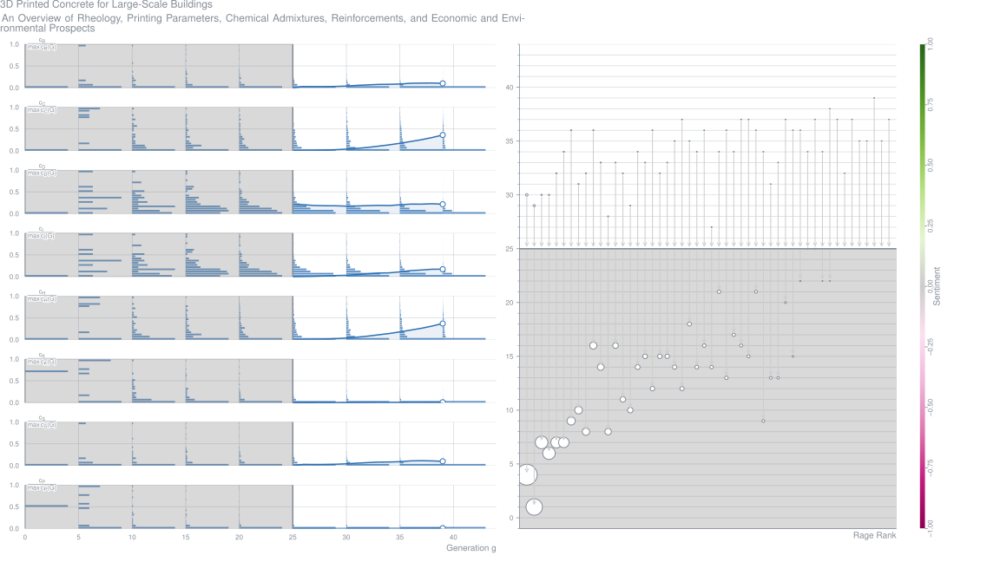
3D Recycled Mortar Printing: System-Development, Process-Design, Material-Properties and On-Site-Printing (2020-09)
Abstract3D concrete printing (3DCP) has received worldwide attention in recent years. However, very limited studies have been carried out on the simultaneous research and mutual coordination of printing system, process design and printing material. In this study, a printing system including supporting subsystem, controlling subsystem, feeding subsystem, and extruding subsystem was developed by considering the properties of mortar and the large-size characteristics of 3D mortar printing (3DMP). The process design of 3DMP, such as tool path and printing parameters, was also redesigned to improve the printing qualities. The properties of printing mortars with/without recycled sand were then comparatively studied, followed by a successful on-site printing of a 2.5 m × 2.5 m × 3 m room. Results have shown that replacing natural sand with 25% of recycled sand caused higher green strength and no obvious decrease in hardened mechanical properties. By properly adjusting printing parameters, the printing mortars (with or without recycled sand) can be well-matched with the printing system. This verifies the practicability of the developed printing system as well as the method of partial application of recycled sand in 3DMP. Besides, it is recommended that both real-time monitoring system and continuous printing are necessary to achieve higher printing quality and efficiency.Metrics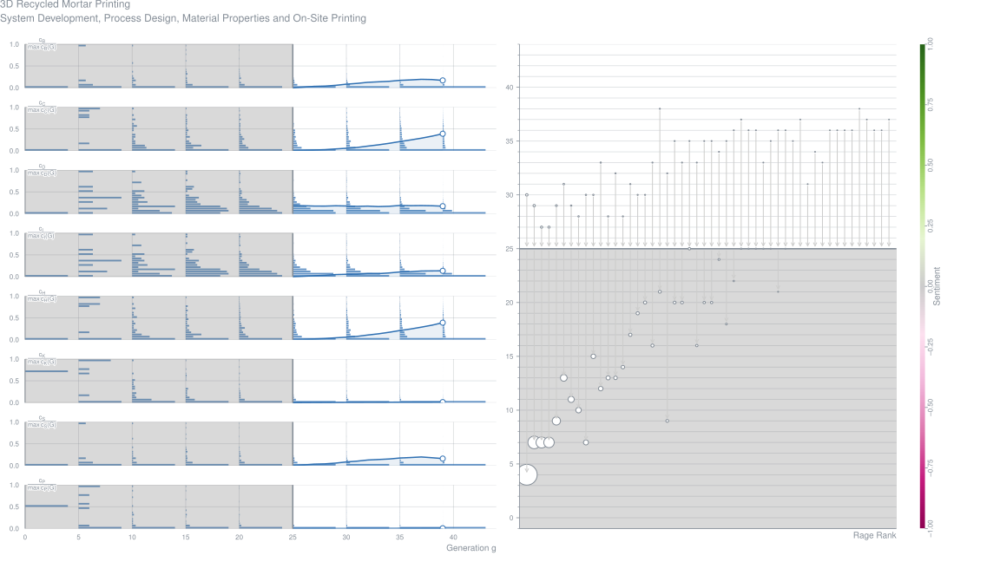
Fabrication and Application of 3D Printed Concrete Structural Components in the Boshan Pedestrian Bridge Project (2020-09)
AbstractSince the introduction of 3D concrete printing technology about two decades ago (Khoshnevis et al., 1998), it has received increasing attention from people in both academia and the construction industry. This growing attention coincided with the advent of digital design and intelligent construction in the building construction industry; the latter was developed to address the challenges of labour shortage, increased structural complexity, low efficiency, and sustainability in building construction. However, at present, 3D printing technology is primarily used for the fabrication of decorative building components or prototypes in the laboratory only. This is because some technological improvements are still required before 3D-printed concrete can be widely used for fabrication of primary load-bearing building structures (Bos et al., 2016). One notable example of the use of 3D-printed concrete structures in practice is the bridge in the Netherlands which was built by researchers at the Eindhoven University of Technology (TU/e) in 2017. For the construction of the bridge, they used cable reinforced concrete and the whole structure was enhanced with steel tendons. The bridge proves the feasibility and safety of 3D-printed concrete structures for public use (Salet et al., 2018); however, the use of 3D-printed concrete as the sole structural material in large-scale building projects still poses questions in regard to efficacy and safety of such buildings.
The objective of our present research is to study the use of 3D-printed concrete in real-world projects, including those involving large-scale structural components and building systems. Accordingly, a pedestrian arch bridge was built using only 3D-printed concrete components, including structural units, handrails, and decorative deck panels; the bridge is composed of 44 units of 3D-printed concrete voussoirs, which was the result of a synthetic solution of material, design and an original-designed printing system.Metrics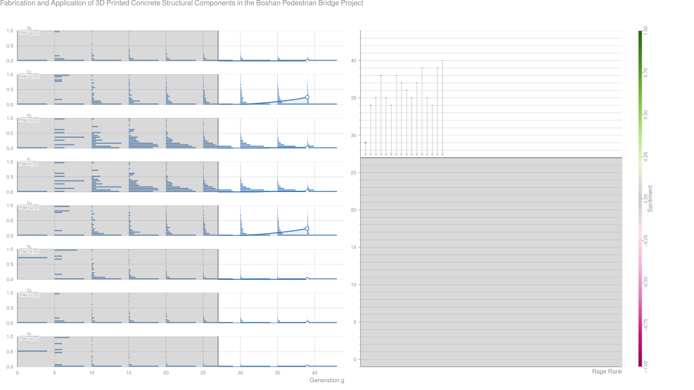